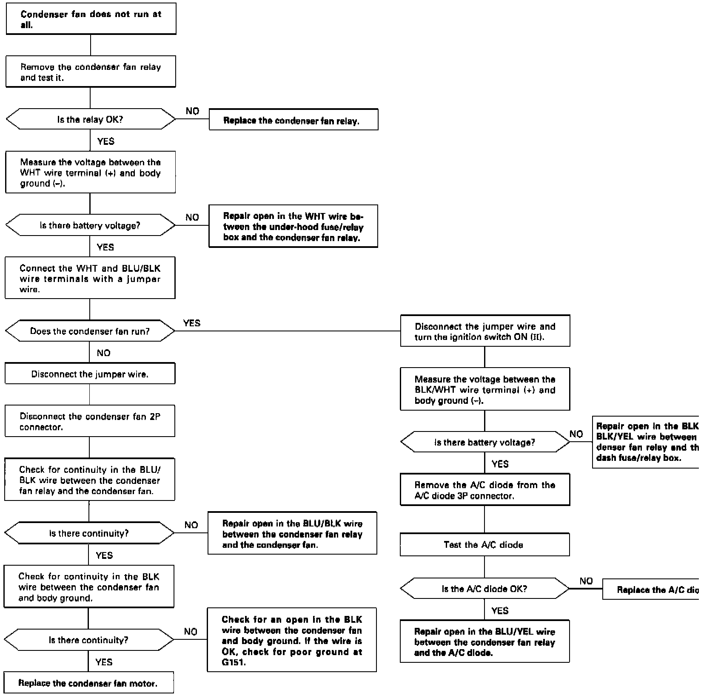

Operation CHARM
: Car repair manuals for everyone.
Home
>>
Acura
>>
1995
>>
Integra (RS, LS) L4-1834cc 1.8L DOHC PFI
>>
Repair and Diagnosis
>>
Heating and Air Conditioning
>>
Condenser Fan
>>
Testing and Inspection
Condenser Fan: Testing and Inspection
�+�9Fig. 1 Condenser Fan Troubleshooting Chart:
